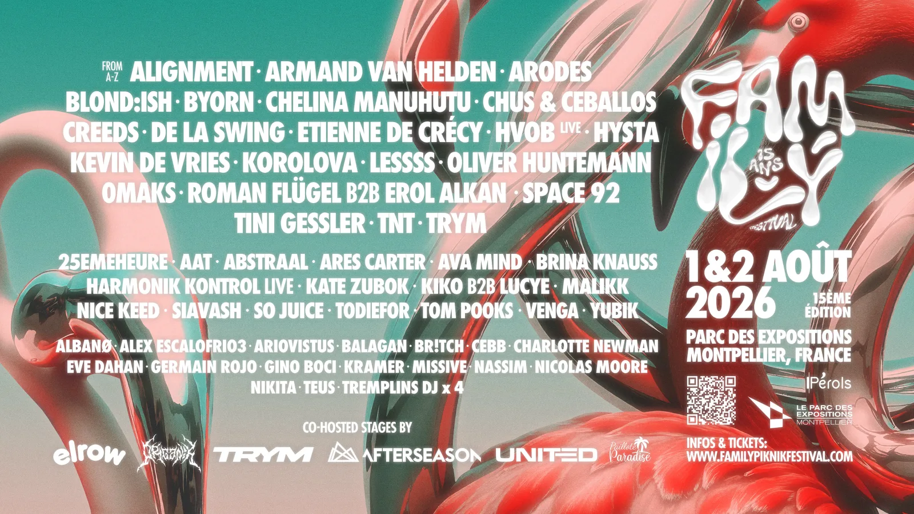
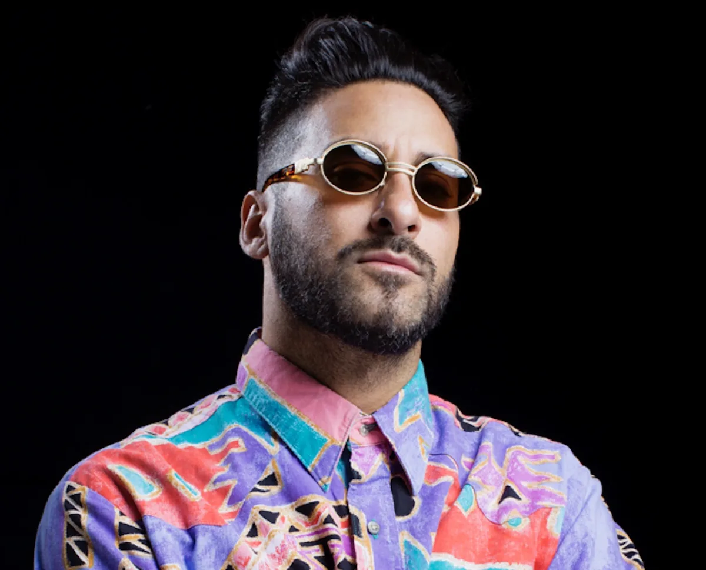
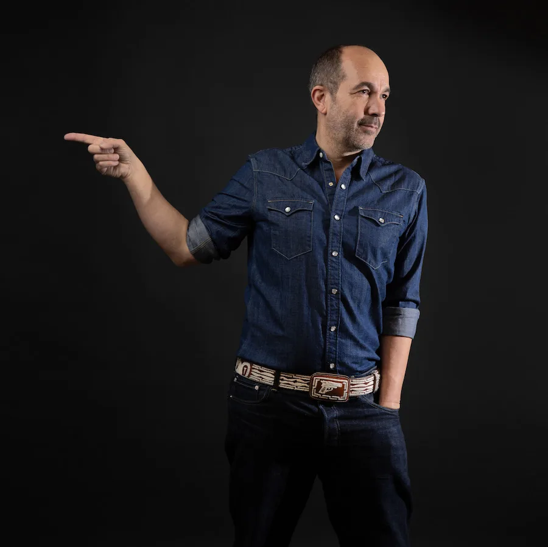

L'affiche des 15 ans · © Family Festival
+60
artistes
3
scènes
1 → 2
août · Montpellier
L'aftermovie officiel de l'édition 2025 · © Family Piknik Festival
Crédits
Captation & montage : ClubbingVision · Prises de vue aériennes / drone : NicoPeak
Tracklisting
1. Propellar · Coming Out Alive (Family Piknik Music)
2. Nihil Young · Dark Future (Family Piknik Music)
3. Harmonik Kontrol · Tazo Live Version 2024 (Awesome Soundwave)
Family Piknik, quinze ans et un cap
Le Family Piknik, tout le monde à Montpellier connaît. Né comme un pique-nique électronique en plein air au début des années 2010, il est devenu au fil des éditions le rendez-vous house et techno de l'été dans l'Hérault. Pour ses 15 ans, il voit grand : deux jours pleins au Parc des Expositions, de midi à 2h du matin, plus de 60 artistes, et, comme chaque année depuis 2018, un concert d'ouverture le vendredi 31 juillet : HVOB au complet, cinq musiciens sur scène, en exclusivité dans le sud de la France, dans un lieu encore tenu secret. L'esprit reste le même. Familial, festif, et sérieux sur la programmation.
Trois scènes, trois mondes
La scène Elrow porte la fête à l'espagnole : Armand van Helden, légende absolue de la house new-yorkaise, y joue le samedi aux côtés de Kevin de Vries et Fleur Shore. Space 92 complète le plateau, avec sa techno taillée pour les mainstages et un "The Door" qui a fait le tour du monde. Le dimanche, Blond:ish et Korolova prennent le relais, avec Venga, l'un des nouveaux talents féminins de la tech house française, déjà remarquée par Fisher, DJ Snake ou James Hype, et le Montpelliérain Teus.
La Hard Stage, c'est là que ça cogne. Installée en indoor dans le hall A2 du Parc des Expositions, elle change de mains chaque jour : le samedi est confié au collectif parisien Organik, avec Creeds, Todiefor, Hysta et 25emeheure. Le dimanche, c'est Trym lui-même qui a composé le line-up de sa journée, entouré d'Alignment et d'Ava Mind. Et pour les plus chauds, un HARD PASS en quantité limitée permet de danser sur scène, au plus près des artistes, dans l'esprit Boiler Room mais sans les caméras. Si vous nous lisez régulièrement, vous savez que c'est probablement là qu'on va passer le plus de temps.
Et la Nomad Stage by AfterSeason joue la carte de l'élégance : Etienne de Crécy, monument de la French Touch, un b2b Roman Flügel et Erol Alkan qu'on n'aurait pas osé imaginer, puis Chus & Ceballos, Oliver Huntemann et le local Cebb le dimanche.
Et l'affiche garde deux cartes dans sa manche : Josh Wink, pionnier de la house de Philadelphie et auteur de l'éternel "Higher State of Consciousness", et un special guest encore tenu secret.


Armand van Helden & Etienne de Crécy · © Family Festival
On couvre des festivals à Barcelone, des salles à Paris et à Londres. Mais celui-là se joue à vingt minutes de chez nous. Et ça change tout.
Notre sélection
On compte bien y être
Après le Sónar en juin, on continue l'été sur nos terres. Le Family Piknik version 15 ans, c'est le genre d'édition anniversaire qu'on ne veut pas rater : assez de têtes d'affiche pour attirer toute la région, assez de talents locaux pour rappeler d'où vient le festival. Précision utile : pour la première fois de son histoire, le festival investit une infrastructure bâtie, accessible en tramway et à deux pas des plages, mais avec des jauges non extensibles. Si vous hésitez encore, la prévente est plus que conseillée. Rendez-vous les 1er et 2 août au Parc des Expositions. Et si tout se passe bien, on vous racontera ça de l'intérieur.